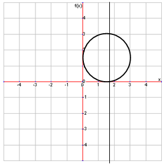
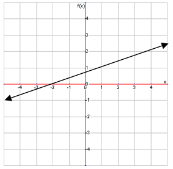

| Food | Cost |
|---|---|
| Pizza | $5 |
| Burger | $8 |
| Salad | $3 |
Domain and Range
As you can see, the two variables here are the type of food and its cost. Generally, the first column (type of food) is all the possible x variables, or the domain, and the second column is all of the possible y variables, or the range.
You may be asked to identify the domain and range of a set of ordered pairs. Because functions show relationships between two variables, you can use ordered pairs to represent these relationships. Identify the domain and range of the following group of ordered pairs:
| Input | Output |
|---|---|
| 1 | 2 |
| 2 | 0 |
| 7 | 5 |
| 4 | 3 |
The domain is $\{{1,2,7,4}\}$ and the range is $\{{2,0,5,3}\}$. One thing to remember is that a function can only have one y-coordinate for each x-coordinate. For example, the table shows ordered pairs that could not be part of s single function:
| Input | Output |
|---|---|
| 2 | 4 |
| 2 | 0 |
| 0 | 1 |
| 3 | 6 |
As you can see, there are two y-values for the x-value of 2, so these points are not a function. However, if there are two x-values for the same y-value, that is okay. Here is an example of ordered pairs that can be a function:
| Input | Output |
|---|---|
| 0 | 9 |
| 2 | 1 |
| 7 | 9 |
| 3 | 6 |
Vertical Line Test
An easy way of determining whether a graph is a function is the vertical line test. To use this test, just draw a vertical line down the graph and move it across your graph. If the line hits two points of the graph at any time, then it is not a function. Look at this graph to see how it works:

The vertical line intersects this circle at two points, so it is not a function.
Extremely Large Domains and Ranges
Finding the domain and range of some functions requires that you write way too many values of x and y, so you can use this shorter way to do it:
Domain: $(-\infty,\infty)$ Range: $(-\infty,\infty)$
The sideways 8 represents infinity. Make sure not to confuse it for a number, because it isn�t. We just use it when the numbers on go forever. On the graph, if you extend the line out, you�ll see that the x- and y-values can be infinitely low or high. Make sure to differentiate between ( and [. The round brackets mean that the number next to it is NOT included in the domain or range, while the square bracket means that it is.
Sometimes, a function will be written as a linear equation because the relationship between the two variables has a certain pattern. Here is an example of a function written as an equation:
$$f(x)=x+2$$
One difference you can see in this function is that $f(x)$ has replaced y. There basically the same thing, but using $f(x)$ is just how it�s done in functions. $f(x)$ means �function of x�. Any letter could be used in place of f, so a function could also be $g(x)$. You can solve these functions just like a regular equation. Just remember that the x in $f(x)$ is also the x in the equation, so $f(1)$, for example, means what $f(x)$ would equal if $x=1$. For example, find $f(5)$ for this equation:
$$f(x)=4/5 x-1$$
Plugging in 5 for x results in $f(5)=3$.